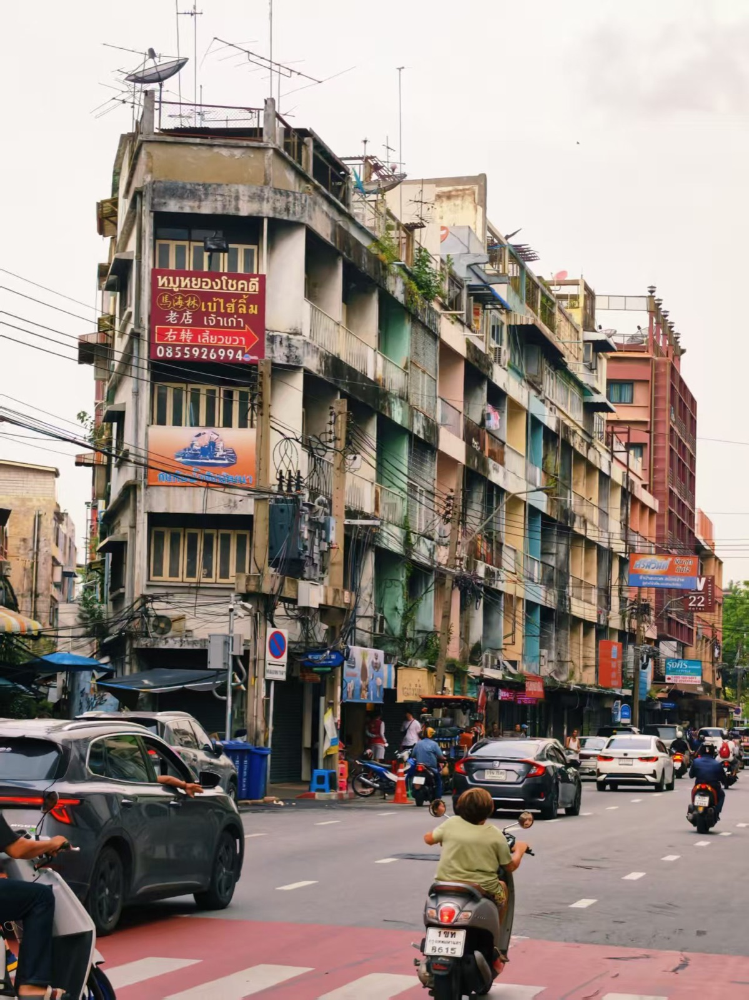
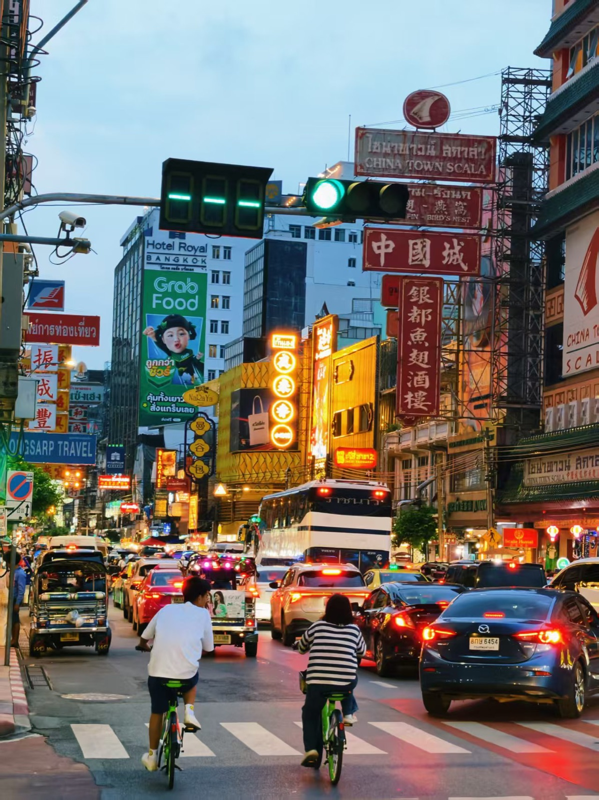

唐人街
唐人街要从白天逛起。沿街是潮汕样式的骑楼，旧了，墙皮斑驳，招牌一层压一层。车和人挤在同一条路上，谁也不让谁，倒也相安无事。

中华日报大厦的牌子竖着排下来，是老华侨的排法。

招牌是这里真正的立面，白天就已经很艳：一面橙色楼墙上叠着七八块彩色灯箱，中文、泰文各写一遍。

拐进小巷，头顶挂满了红灯笼。天是阴的，灯笼比天还红。

文化交融最直白的一景在街口：一整尊擎天柱立在那里，旁边的栏杆上挂着「哒叻仔仙公市场」的牌子，是泰国首个汽车零部件中心。变形金刚和老爷庙开在同一片街区，谁也没觉得哪里不对。

入夜之后，整条耀华力路开始发光。「中國城」「銀都魚翅酒樓」的灯牌一层层亮上去，车流把红光铺了一路。

最后在 Opium 的天台上喝完酒，俯瞰这一片。异国他乡的灯火，看着让人安心。